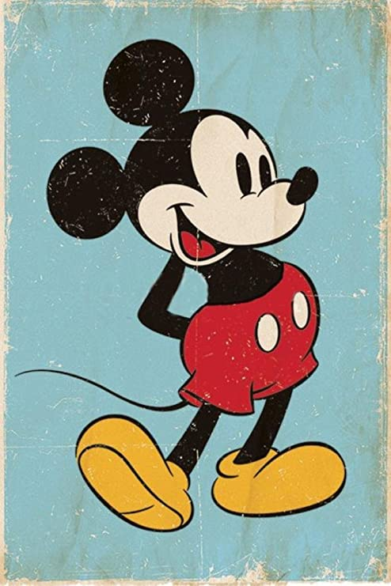

Site Name:
Disney Line-Buddy
The name of this site is Disney Line-Buddy. Even the Happiest Place on Earth can be pretty miserable when you have to wait in line for hours, ride after ride after ride.
But, with this web app you'll spend time in line making memories, not waiting around to make memories.
Or, if you're not at the park, waiting in line for your favorite ride, you can pass the time with this app and dream about your next vacation with The Mouse!
Purpose:
- What's the weather at my favorite Disney Park?
- What movies does Elsa appear in?
- Trivia: How many official Disney princesses are there?
- Do you want to play a round of 3-across Mouse (tic-tac-toe)?
Domain:
www.thegreatmouse-capades.com
Graphics:

Adobe Stock Image
Standard License